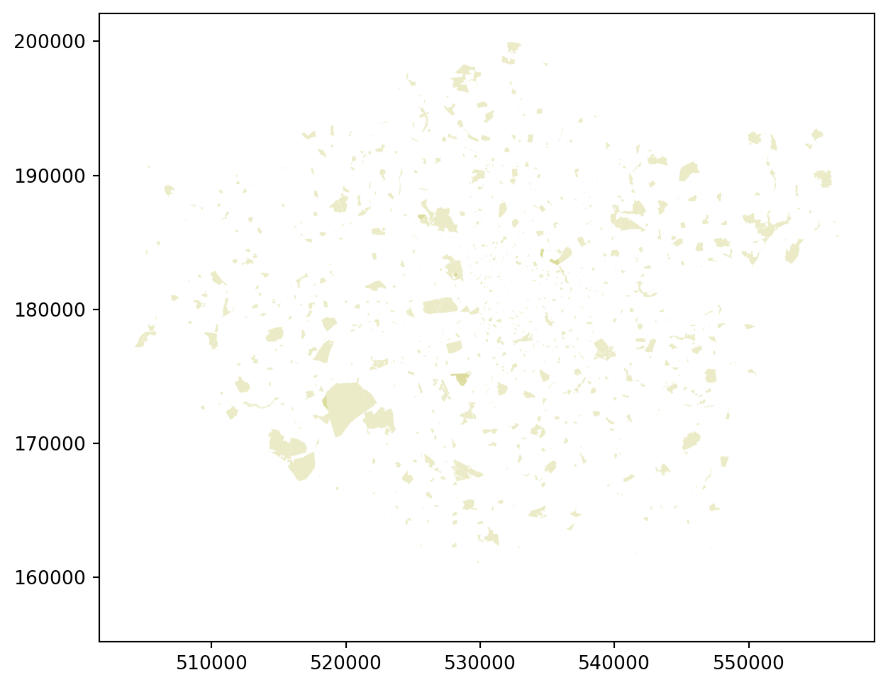

Last week we did some initial processing on the Inside Airbnb listings data, focussing on its numeric properties. This week we are going to focus on the spatial properties of the data set.
Tip
It makes life a lot easier if you gather all of the library import commands and configuration information (here having to do with matplotlib) in the first exectuable code block in a notebook or script. That way it’s easy for you for others to see what what it is necessary to have installed before getting started!.
Preamble
import osimport numpy as npimport pandas as pdimport geopandas as gpdimport matplotlib.cm as cmimport matplotlib.pyplot as pltimport matplotlibimport matplotlib.font_manager# For debugging purposes (fonts can be hard)print(matplotlib.get_cachedir())# We change fonts the hard way in this notebook...# but you can also do this to change the default # font everywhere in one go:# matplotlib.rcParams['font.family'] = "Liberation Sans Narrow"fontname ="Liberation Sans Narrow"matplotlib.font_manager.FontManager().findfont(fontname, fontext='ttf', rebuild_if_missing=True)
We’re building on the work done in Practical 5 and Practical 4 (with a particular nod to the lecture on Data) to create some useful functions that we can call on at-need to improve the ease of doing data analysis.
I find GeoPackages and GeoParquet to be by far the easiest way to distribute geo-data now: they are a single file (in a database-like format that supports multiple types of data), include the projection information by default, and in some cases QGIS can even embed information about rendering style!
We’re going to do something similar to the get_url in order to download the file to our hard drive and save it there. The improvement is that we’ll check to see if the file already exists and, if it does, return that so that you can don’t have to keep downloading it week after week.
You’ll need to add the documentation yourself and I’ve left a few ?? to challenge you.
Caching Remote Data
We don’t want to continually download data over the Internet: 1) because it’s not nice to whoever is hosting the data; and 2) because it requires you be online in order to run your code. So if we can ‘cache’ the data locally so that it’s only downloaded once this makes life much, much easier.
I’ve used the Numpy-style comments here, but the Google-style also look good in this context and all styles of answer are acceptable so long as they work. See overview of commenting styles on DataCamp.
Tip
Use this as an opportunity to improve your ability to read code and to learn through documentation.
Difficulty level: Moderate
Question
import osfrom requests import getfrom urllib.parse import urlparsedef cache_data(src:str, dest:str) ->str:""" ?? """ url = urlparse(src) # We assume that this is some kind of valid URL fn = os.path.split(url.path)[??] # Extract the filename dfn = os.path.join(dest,fn) # Destination filenameifnot os.path.isfile(dfn) or os.path.getsize(dfn) <250:print(f"{dfn} not found, downloading!") path = os.path.split(dest)iflen(path) >=1and path[0] !='': os.makedirs(os.path.join(*path), exist_ok=True)withopen(dfn, "wb") asfile: response = get(src)file.write(??.content)print("\tDone downloading...")else:print(f"Found {dfn} locally!")return dfnhelp(cache_data) # <- This should show the docstring you've written
Downloading the Data
Difficulty level: Low, if your function works!
Geopackages
Use the function above to download and cache the GeoPackage files found on GitHub for Boroughs, Water, and Greenspace, then pass the output of these to GeoPandas. If you have been having trouble downloading files from GitHub, then use the understanding of the function developed above to download the file manually and place it where this function expects to find it!
Let’s re-use our cache_data function to download and save the full Inside Airbnb data set. Again, if you have trouble with downloading via code, use your understanding of the function to work out where to save your own copy of this file so that the function works as expected.
Difficulty level: Low
Question
# Set download URLymd ='2023-09-06'host ='https://orca.casa.ucl.ac.uk'url =f'{host}/~jreades/data/{ymd}-listings.parquet'# your code heredf = pd.read_parquet( ??(??, os.path.join('data','raw')) )print(f"Data frame is {df.shape[0]:,} x {df.shape[1]}")
You should see that the file was ‘not found’ so ‘downloading’ happened and then the size of the data frame was printed out.
‘Writing’ Geo-Data
Of course, you will also often encounter geo-data that is not yet ‘geographically enabled’; the two most frequent contexts for this are:
The data represents points and is provided with latitude and longitude (or similar) as separate columns in a non-geographic data set.
The data represents polygons but is provided separately from the polygons themselves and so cannot be shown on a map without being ‘joined’ to the geography first.
We’ll tackle each of these eventually, but for now we’re going to focus on the first option.
Creating a GeoDataFrame
Difficulty Level: Low
Right, we’re finally there! We need to convert our coordinates into some kind of geo-data. GeoPandas offers two ways to do this: the original way using zip and a new utility method called points_from_xy. Here’s the old way:
from shapely.geometry import Pointgdf = gpd.GeoDataFrame(df, geometry=[Point(x,y) for x, y inzip(df.Longitude,df.Latitude)])
Note, however, that this did not automatically set a projection, unlike the new approach with the ‘helper function’:
We want to save the InsideAirbnb GeoDataFrame to the ‘geo’ directory, but first let’s see what file formats are supported.
Format
Advantages
Disadvantages
Shapefile
Wide support
Easy to break via loss of individual file element and not very efficient format
GeoJSON
Human-readable
Highly inefficient storage format
GeoPackage
Lightweight spatial database with benefits of indexing
Lightweight spatial database with limits on data types supported
Parquet
Highly compressed columnar database
Limited GIS support (except QGIS)
GeoPackages are really well-supported by QGIS: you can even embed multiple layers with different style information so that your final analysis is easy to distribute; however, they also carry quite a bit of overhead that makes them inefficient for distributing smaller data sets, while also not supporting the full spectrum of Pythonic data structures such as categorical data or lists.
GeoParquet is an extension of the Parquet format. For working with large data sets this has revolutionised my workflow: getting excited about a columnar database might seem a bit… nerdy… but it’s been transformative for many data scientists. First, because the data set is columnar you only read in the data that you need, so reading Parquet file is blindingly fast. Second, you can stream data from a Parquet file over the Internet, so that means you even gain these advantages reading remote files. Third, you have full support for Python data types, including (up to a point) objects. And, fourth, you can treat multiple Parquet files with the same layout as a single data set or mutiple Parquet files with different layouts as tables in a single database!
Specifying a Driver
Since there are many formats in which to save geo-data, rather than have multiple to_format_x methods, GeoPandas has one for local files (to_file). If you are reading/writing a filename than ends in a valid extension (e.g. .shp, .gpkg, or .geojson) then GeoPandas will ‘do the right thing’. Where you may run into trouble is if you are reading/writing a URL (e.g. https://github.com/jreades/fsds/blob/master/data/src/Boroughs.gpkg?raw=true). With a URL ending in ?raw=true there’s no extension that GeoPandas can see so you will need to specify a driver. If in doubt, specify the driver.
Clarification
In this practical we are reading geodata from GitHub and I’m saying that we need to specify the driver. So why didn’t we need to do with the cache_data function earlier as well? Well, this was a side-benefit of using the standard URL library: it automatically stripped off the query string (?raw=true) when I asked it for the file name, so we saved the file locally as a GeoPackage with .gpkg extension, which means that GeoPandas could read it without any problems.
So the following two bits of code are equivalent:
# This *may* not always do what we want, but should be fine for local filesboros.to_file('test.gpkg')
# This is safer if working across computers/the Internetboros.to_file('test.gpkg', driver='GPKG')
So, starting with fn = ‘2023-09-06-listings.gpkg’
Notice the difference:
print(f"Using '{fn}' as basis for saving data...")try: gdf.to_file(os.path.join('data','geo',fn), driver='GPKG')exceptTypeErroras e:print("Caught type error...")print(str(e)[:1000] +" ...")
Using '2023-09-06-listings.gpkg' as basis for saving data...
Caught type error...
Cannot interpret 'CategoricalDtype(categories=['Barn', 'Boat', 'Camper/RV', 'Campsite', 'Casa particular',
'Castle', 'Dome', 'Earthen home', 'Entire bungalow',
'Entire cabin', 'Entire chalet', 'Entire condo',
'Entire cottage', 'Entire guest suite', 'Entire guesthouse',
'Entire home', 'Entire home/apt', 'Entire loft',
'Entire place', 'Entire rental unit',
'Entire serviced apartment', 'Entire townhouse',
'Entire vacation home', 'Entire villa', 'Farm stay', 'Floor',
'Houseboat', 'Hut', 'Island', 'Minsu', 'Private room',
'Private room in bed and breakfast', 'Private room in boat',
'Private room in bungalow', 'Private room in cabin',
'Private room in camper/rv',
'Private room in casa particular', 'Private room in chalet',
'Private room in condo', 'Private room ...
If you try to save as a GeoPackage file then the code above typically throws a TypeError because of the presence of Categorical data.
But the below, in which we specify as a ‘geoparquet’ because of the coordinate data, does not:
It’s also worth comparing the output of a point with the output of a polygon or multi-polygon because you may well come across data in formats (e.g. WKT) resembling both of these in real data sets and they can be read as well. Notice too that we can use loc and iloc accessor methods to pull individual points and polygons out of a GeoDataFrame!
print(gdf.geometry.iloc[1]) # Print out the object's contentsgdf.geometry.iloc[1] # The object knows how to print itself as a point
POINT (-0.21707 51.49993)
# Object to string then print out first 399 charactersprint(str(boros.geometry.iloc[1])[:399] +"...") # So this is a multi-polygon boundaryboros.geometry.iloc[1]
So each element of this Series has text indicating the type of shape the geometry applies to (e.g. POLYGON) followed by a bunch of numbers. These numbers are truncated here just to make things a little more legible.
Checking the Data
Checking Numeric Data
Before we mindlessly convert the parquet data to mappable geo-data it might make sense to sanity-check it. GeoPandas has a total_bounds method that gives us the bounding box for a GeoSeries, but how would we do that in Pandas?
Tip
Think about what the ‘total bounds’ (or ‘envelope’) of a point data set is. You have already seen the pandas functions you’ll need to find these…
Difficulty level: Moderate
Question
print(f"The bottom-left corner is {??}, {??}")print(f"The top-right corner is {??}, {??}")
Your answer should produce the following:
The bottom-left corner is -0.5, 51.3
The top-right corner is 0.3, 51.7
Checking via a Plot
Difficulty level: Low
We’ll see how you control figure-making more effectively later, but for now let’s just see what they look like using GeoPanda’s plotting functionality. If you don’t see what you expected then the problem could be quite basic/fundamental.
Question
for ??: ??.plot()
Checking the Projection
Difficulty level: Low
Check the projection of each GeoDataFrame using a for loop and the crs attribute.
Question
for g in [??]:print(g.??)
You should see that all three are in the EPSG:27700 CRS which is a common one for analysis using GB data.
Reprojecting the Data
Difficulty Level: Low
Let’s start by taking our InsideAirbnb data in its original projection…
… and reprojecting this into the OSGB1936/BNG CRS:
Question
gdf = gdf.??(??) # There is no 'in_place=True' option here.print(gdf.geometry.crs)print(gdf.total_bounds)
Notice the change in total bounds from lat/long to Northing/Easting.
Simple Mapping
The files we’ve just downloaded all contain polygons, and the adjustments for points are different, but it’s worth seeing how you can tweak these before we start combining them. Behind the scenes, GeoPandas is using matplotlib to render the map, so let’s play with the colours to get the start of something map-like.
R and Python take very different approaches to plotting. Do not think of Python’s output as being ‘maps’ in the GIS sense, they are composed of ‘patches’ of color on abstract ‘axes’ that can use any arbitrary coordinate space. So colours are ‘really’ triplet (or quadruplet if you have alpha-blending transparency) values in the range 0.0-1.0. Annotations are then added in similarly abstract fashion.
I’d suggest the following colour scheme as a way to test out different ways of specifying colour (though anything you like is fine so long as you manipulate the colours):
The boroughs can have red edges and white fill with a thick edge.
The water should have no edges and XKCD Lightblue fill.
The greenspace should have edges and faces specified using different ‘alpha blending’ (i.e. transparency) levels.
Boroughs
By way of a hint, matplotlib uses edgecolor and facecolor for controlling ‘patches’ (which is what polygons are considered), but the thicker-than-default line-width is specified differently (you’ll need to look this up). So the intention is:
Thick red borough borders, and
White fill colour.
Just to drive home how different this is from R, you can find the answer to question 1 on the page for bar plots.
Question
boros.plot(??)
Your plot should look similar to this:
Water
The process is the same as above, but I’d like you to work out how to specify: 1. No color for an edge, and 2. An XKCD color for the face.
Question
water.plot(??)
Your plot should look similar to this:
Greenspace
The process is also the same as above, but I’d like you to work out how to specify colours and transparency using RGBA (red-green-blue-alpha transparency) tuples. So we’re looking for: 1. No edge color. 2. A partially transparent green specified as a ‘tuple’ (4 numbers in parentheses in the range 0.0-1.0).
Question
green.plot(??)
Your plot should look similar to this:

Combining Layers
Warning
R and Python take very different approaches to plotting. Do not think of Python’s output as being ‘maps’ in the GIS sense, they are composed of ‘patches’ of color on abstract ‘axes’ that can use any arbitrary coordinate space. So colours are ‘really’ numerical triplets (or quadruplets if you have transparency as well) in the range 0.0-1.0. Annotations are then added in similarly abstract fashion.
Now that we’ve got our layers looking roughly how we want them, it’s time to combine them. This is also reliant on matplotlib and basically involves plotting items to shared axes which is done by passing in ax=<axis object> to each plot(...). By convention, if you only have a single figure (e.g. a single map) then you create an axis object and name it ax so you will see a lot of ax=ax code in graphing libraries, but =ax is just saying ‘assign to the axis object that I created’.
Since the axes are how you control what is shown, see if you can find out by Googling how to set the x- and y-limits on the map so that it shows only London and trims out the much larger area of water that is outside of the Greater London Authority. As a rough guideline, this has the Easting range 501,000 to 563,000, and the Northing range 155,000 to 202,000.
You can set these limits before or after you start adding layers to the ‘map’, but it’s probably easier conceptually to add them after with the idea of ‘zooming in’ on the features of interest. It’s also easier to debug since you can start by seeing if you can plot the elements at all, and then add the limits to zoom.
So the steps are:
Write the code to plot every image on the same set of axes (I’ve given you something to get started).
Google how to set the limits of the map and then use the ranges I’ve offered above.
Work out how to change the width of the edges for the boroughs layer.
Save it somewhere local so that you could, say, load it into a Markdown file!
Tip
This is a first pass at a map, over the next few weeks we’ll see how to add things like axis labels and titles to make it more ‘map-like’. We don’t have quite the built-in functionality of ggplot alas, but Python is advancing very quickly in this area. There is even an implementation of ggplot in Python, but it’s functionality is more limited. In fact, there’s more than one…
Difficulty level: Hard
Question
# Creates a new figure with specified number of# subplots (we'll see more of this later) and # and the specified size (in inches by default).fig, ax = plt.subplots(1,1, figsize=(9,6))# Plot all three GeoPackages to the same axeswater.plot(??, ax=ax)green.??boros.??# Set the x and y limits# Save the image (dpi is 'dots per inch')os.??('img', exist_ok=True)plt.savefig(os.path.join('img','My_First_Map.png'), dpi=150)
You may wish for a different look, but here’s one version of the output:
Choropleth Plots
Difficulty Level: Low
Now that we’ve converted the InsideAirbnb data to a GeoDataFrame, we can plot it, reproject it, etc.
See if you can work out how to plot the points coloured by their price using the appropriate BNG projection.
As we saw above with the point-plot, in its original form the pricing data will not reveal much of interest because of the range of the data. However, as you will have seen in QM already (and as we explore in greater detail in Weeks 7/8), using transformations we can manipulate the data to increase its tractability for analysis.
Let’s start by getting a feel for the full data set in terms of the range of prices that it contains:
Question
print(f"The range of price is ${??:,.2f} to ${??:,.2f}")print(f"The mean and median of the price are ${??:,.2f} and ${??:,.2f}")
Notice the neat little comma-separated thousands in there? That’s fairly easy to do in English, but to use a thousands separator common to another language you would need to do something a little more tricky.
Inheritance!
We already know that GeoPandas inherits functionality from Pandas, but let’s formalise this…
First, let’s check what class of object gdf is using the isinstance function:
# Is gdf a GeoDataFrame object?ifisinstance(gdf, gpd.GeoDataFrame): print("\tI'm a geopandas data frame!")# Is gdf *also* a DataFrame object?ifisinstance(gdf, pd.DataFrame): print("\tI'm a pandas data frame!")
I'm a geopandas data frame!
I'm a pandas data frame!
Benefiting from Inheritance
That result means that we can also investigate the data using, for instance, a pandas histogram:
Question
# Oooooh, let's use a *pandas* method heregdf.price.plot.??(bins=??, figsize=(10,3));
Notice how we’ve used our GeoDataFrame as if it’s a plain old DataFrame here? That’s the miracle of Object-Oriented Design: we can do anything we would with a regular Pandas df as we do with a GeoPandas gdf because GeoPandas inherits all the methods of its parent super-class.
We can see that there’s very little data above (at a guess) about $2,000, but at this scale it’s hard to tell. We’ve already seen that you can use axes limits to adjust the display of a map, but the same technique applies to plain old plots because they’re fundamentally the same thing.
Try adjusting the axis so that the x-range is 0..2500:
Anyway, drawing on everything we’ve seen over the past couple of weeks (and in this practical) I’d like you to:
Try to take the natural-log of the price (hint: use numpy) and assign to a new Series called lnprice.
Work out what the error means.
Work out how to fix the error and then repeate step 1.
Work out how many rows were affected.
Report on the new min/max values.
Work out if other outliers need to be removed (use code from above).
Remove outliers and then continue with your work…
# Use this as a 'scratch space' to work out what's needed below...
Question
print(f"gdf has {gdf.shape[0]:,.0f} rows.")# ---------- Do the processing -------------# You may need more than one of these 'drops'# to get the data the way you want...gdf.drop(gdf[??].index, axis=0, inplace=True)gdf['lnprice'] = np.log(gdf.price)# ---------- Check effects -----------print(f"gdf now has {gdf.shape[0]:,.0f} rows.")print(f"The range of price is {gdf.price.min():,.2f} to {gdf.price.max():,.2f}")print(f"The range of ln(price) is {gdf.lnprice.min():,.4f} to {gdf.lnprice.max():,.4f}")gdf.price.plot(kind='box', vert=False, color=dict(boxes='r', whiskers='r', medians='r', caps='r'), boxprops=dict(linestyle='-', linewidth=1.5), flierprops=dict(linestyle='-', linewidth=1.5), medianprops=dict(linestyle='-', linewidth=1.5), whiskerprops=dict(linestyle='-', linewidth=1.5), capprops=dict(linestyle='-', linewidth=1.5), showfliers=False, grid=False, rot=0);plt.title("Price (Outliers not shown)")plt.show()gdf.lnprice.plot(kind='box', vert=False, color=dict(boxes='r', whiskers='r', medians='r', caps='r'), boxprops=dict(linestyle='-', linewidth=1.5), flierprops=dict(linestyle='-', linewidth=1.5), medianprops=dict(linestyle='-', linewidth=1.5), whiskerprops=dict(linestyle='-', linewidth=1.5), capprops=dict(linestyle='-', linewidth=1.5), showfliers=False, grid=False, rot=0);plt.title("Ln(Price) (Outliers not shown)")plt.show()
Plot Options
Now plot the ln(price) as a chloropleth using:
A figure size of 9 x 6
A marker size of 0.25
The Viridis colourmap
A legend
A legend label of ‘Natural Log of Price per Night ($)’
ax = gdf.plot(figsize=??, marker='*', markersize=0.25, column=??, cmap=??, legend=??, legend_kwds=??);ax.set_title("Plot of Natural Log of Nightly Price for Airbnb Listings (Outliers Removed)");
You should get something like:
Natural Log of Price per Night ($) with Outliers REmoved
Zooming In/Out
Difficulty Level: Low
That’s a little hard to see, let’s try zooming in on Central London! Very roughly, let’s call that an Easting range of 525,000 to 535,000 and a Northing range of 178,000 to 185,000.
Plotting
We show one way to do this below (f,ax = plt.subplots(...)) because it gives you greater control, but gdf.plot()can return an axis object (ax = gdf.plot(...)) that gives you the same kind of access… but with a bit more ‘faff’.
Question
# Note this new f,ax syntax and that we then# pass ax=ax to gdf.plot -- this has to do with# where and how things are plotted.f,ax = plt.subplots(1,1,figsize=(9,6))gdf.plot(ax=ax, marker='*', markersize=0.25, column='lnprice', cmap='viridis', legend=True, legend_kwds={'label':'Natural Log of Price per Night ($)'});ax.set_title("Ln(Price/Night) for Airbnb Listings (Central London Detail)")ax.??ax.??f
Your result should look something like this:
Natural Log of Price per Night ($)
That’s a little better, but ideally we’d do more thinking about outliers…
Let’s give this one last try using the quantiles classification scheme for Central London!
Question
f,ax = plt.subplots(1,1,figsize=(9,7))ax = gdf.plot(marker='*', markersize=0.25, column='lnprice', cmap='viridis', ??, k=5, legend=True, ax=ax);# Note that the legend *label* had to go -- # there are other ways to add it.ax.set_xlim([525000,535000])ax.set_ylim([178000,185000])
Your answer should look like:
Natural Log of Price per Night ($) in Central London
Simple Web Maps
Difficulty Level: Hard
This is more for the sake of demonstrating Python’s features than because it’s part of my workflow, but what the heck, let’s do it! We will create and embed a zoomable web map in the notebook; to do that we need to:
Calculate the bounds of the map using the min/max x and y coordinates above.
Calculate the centroid of the map from the bounds.
Set an appropriate zoom level.
If your work is going well, perhaps you may also want to experiment with different basemaps.
Tip
You can’t use round here because it it could round up or down depending on what’s closest and, consequently, cut off data on your map. So you’ll have to look for two other functions that do this predictably (e.g. always rounding down, even if the value is 4.999999). However, those functions don’t handle decimals like round does, so you need to think about how you could turn a number like 4.99 into a number that those functions can work with and then turn it back into the decimal…
Question
from math import floor, ceil# Calculate min and max to *two* decimal placesxmin = ??xmax = ??ymin = ??ymax = ??# Print them to *3* decimal places to check they end in 0print(f"{xmin:.3f}, {xmax:.3f}, {ymin:.3f}, {ymax:.3f}")# Calculate the centre of the mapyctr = ??xctr = ??# Print this two ways to see an intriguing issueprint(f"{xctr:.5f}, {yctr:.5f}")print(xctr, yctr)
If you’ve managed the calculations above, then this code should simply run!
from ipyleaflet import Map, basemaps, basemap_to_tiles, Rectangle, projections# Note the basemap can be easily changedwatercolor = basemap_to_tiles(basemaps.OpenStreetMap.HOT)m = Map(layers=(watercolor, ), center=(yctr, xctr), zoom=8)rectangle = Rectangle(bounds=( (ymin, xmin), (ymax, xmax) ), crs=projections.EPSG4326)m.add_layer(rectangle)m
Your map should look like this:
Bringing it All Together
Difficulty Level: 🤯
To give a bit of a show of how we can put it all together try to get this working
Question
import pysal as pimport mapclassify as mcimport palettable.matplotlib as palmplfrom legendgram import legendgram# We create a temporary data frame here because we want# the 'bins' to be created using only the data on the # map. Otherwise, we'd have a distribution on the map # that differed from the one in the legendgram and the# one used to calculate the breaks in the first place!tgdf = gdf[(gdf.geometry.x >525000) & (gdf.geometry.x <540000) & (gdf.geometry.y >176000) & (gdf.geometry.y <186000)].copy()# Here we use Mapclassify to calculate quantiles# (k=5) using the original price. You could use# any Mapclassify scheme at this point, though# note that for Fisher Jenks you might want to use# the 'Sampled' version to speed things up a bit.q = mc.??(tgdf.price.values, ??)# We then write these binned values *back* on to the data# frame so that we can use them with the GDF plot function.tgdf['bins'] = q.??# Set up the figure with its 'basemap'f,ax = plt.subplots(figsize=(10,6))green.plot(edgecolor=(0.7, 0.7, 0.14, 0.25), facecolor=(0.7, 0.7, 0.14, 0.25), zorder=1, ax=ax)water.plot(edgecolor="none", facecolor='xkcd:lightblue', zorder=2, ax=ax)boros.plot(edgecolor=(0.8, 0, 0, 0.5), facecolor='none', linewidth=2.5, zorder=3, ax=ax)# Restrict the x and y axis to the data# Notice it's hard-coded here *and* above# this could be done *better* using a # custom bounding box so that we could # update both the tgdf and the display# area at the same time.ax.set_xlim([525000,540000])ax.set_ylim([176000,186000])ax.axis(??) # Don't plot the axes# Plot the bins using a categorical legend instead# of the price using a continuous legend.tgdf.plot(column='bins', categorical=True, cmap='viridis', legend=True, marker='.', markersize=1.5, zorder=4, ax=ax)# Set the title using a specified font, weight, and sizeax.set_title('London Airbnb Listings Price Per Night', fontdict={'fontsize':'20', 'fontweight':'3', 'family':fontname}) #provide a title# This is where geopandas gets in the way -- the # categorical legend doesn't work for us so we need# to actually create the legend 'by hand' using this # code... which first has to *find* the layer containing# the data! Each layer is a 'patch collection', so we # loop through the collections looking for the one whose# z-order is 4 (which we set above to the data layer).## I relied on this: https://stackoverflow.com/a/71419387/4041902# to work out how to do this!for c in ax.collections:# Find the layer with the dataif c.get_zorder()==4:# *Now* we can create a legend... but we need to # first retrieve the colours from the layer. These# are returned as 'handles' and then we need to # associate these with the labels taken from the# Mapclassify object... Once we set that up, along# with fonts and such, we can add it as an 'artist'# to the figure. handles, _ = c.legend_elements(prop="colors") legend1 = ax.legend(handles, q.get_legend_classes(fmt='{:.2f}'), loc="upper right", title="Price per Night", prop={'size':'10', 'weight':'1', 'family':fontname}) ax.add_artist(legend1)# And don't forget to add a source!a = ax.text(tgdf.geometry.x.max(), tgdf.geometry.y.min(), 'Source: InsideAirbnb (2022)', horizontalalignment='right', verticalalignment='bottom', fontsize=14, fontweight=4, color='#333333', family=fontname)# And this is a nice feature: show the distribution!ax2 = legendgram(f, ax, tgdf.??, q.??, bins=round(gdf.price.max()/25), pal=palmpl.Viridis_5, legend_size=(0.3, 0.1), loc='lower left', clip=(0,1000), frameon=True )# But we have to fix the font manually here# for the legendgram toofor tk in ax2.get_xticklabels(): tk.set_fontname(fontname)#plt.savefig('Airbnb-price-all.png', dpi=150)
You should have something like this:
Figure 1: London Airbnb Listings Price Per Night (Quantiles)
I’ll be honest, I do find ggplot easier for making good-quality; this is more customisable overall, but it’s also much more ‘magical’ in the sense of ‘search for matplotlib examples that do what you want then copy+paste them and tweak’ being the main way that most people get things working how they want.
Scalebars are awkward, and there’s now a library that can help with this on GitHub that I’ve installed. But I’ll leave that one to you.
Tip
You can find a lot of possible solutions in this Stackoverflow thread that should work without needing to install new libraries but I’ve not had a chance to test them each individually. You would undoubtedly want to put this in an external package and import it when needed rather than paste this code into every file. But you might find it easier to test the solutions by pasting. If you’re looking for glory (and my gratitude) then working out which of these is most generalisable (i.e. would work with both lat/long and OSGB coordinates) would be quite the challenge!
Getting More Help/Applications
A great resource for more help and more examples is Dani Arribas-Bel’s Geographic Data Science module: he has put all of his module practicals online (as we have too), and you might find that something that he does makes more sense to you than what we’ve done… check it out!
Credits!
Contributors:
The following individuals have contributed to these teaching materials: Jon Reades (j.reades@ucl.ac.uk), James Millington (james.millington@kcl.ac.uk)